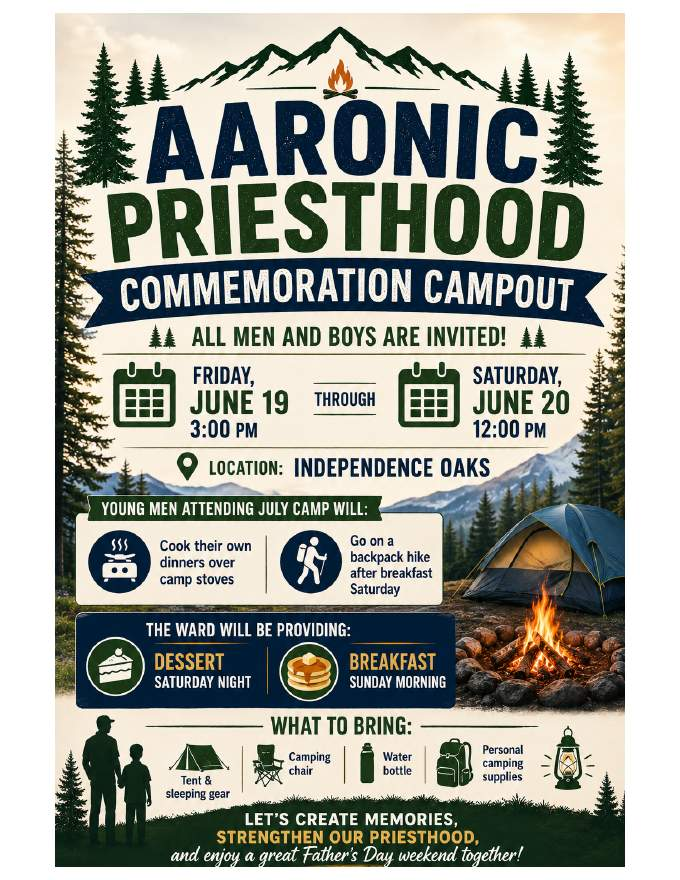

Sacrament Meeting
Sunday, June 7, 2026
Clarkston Ward • Farmington Hills Michigan Stake
9:00 AM – 10:00 AM
Presiding:Bishop Wilson
Chorister:Sis. Laura Allen
Conducting:Bro. Tim Morley, Second Counselor
Pianist:Sister Laura Zundel
| Opening Hymn | #27 Praise to the Man |
| Invocation | By Invitation |
| Sacrament Hymn | #171 With Humble Heart |
| Administration of Sacrament | |
| Testimonies — By the congregation until ~09:50 AM | |
| Closing Hymn | #30 Come, Come, Ye Saints |
| Benediction | By Invitation |
Building Cleaning — Saturday, June 20, 2026
Ruby
RubyJohnsonTatoris C&JJorgensenHookerAllenAllredBennetBartkowiak
Emergency Preparedness Fireside — Tonight, 6:00–7:30 PM
Sunday, June 7 · Clarkston Ward Meetinghouse
Aaron Witt (Stake High Council, Stake Emergency Management Specialist) will provide training on emergency preparedness and safety in church meetings, including instruction for ushers and discussion-based scenarios on responding to active threats. All are welcome.
Gospel Questions – June 7
The Bells' Gospel Questions class will next meet on Sunday, June 7th in the Family Search Center during second hour. All are invited to join us! We will discuss and determine upcoming topics.
Aaronic Priesthood Commemoration Campout
All men and boys are invited!
Friday, June 19 at 3:00 PM through Saturday, June 20 at 12:00 PM
Location: Independence Oaks



Sunday Class Schedule Changes – September 2026
Beginning the first week of September 2026, the Sunday class schedule will change. Sacrament meeting continues at 60 minutes, followed by a weekly 25-minute Sunday School class and a 25-minute Elders Quorum, Relief Society, or Young Women meeting. Primary will continue weekly and last 55 minutes. Learn more at ChurchofJesusChrist.org.
DISCOVER — Find out who your family members are.
GATHER — Collect names and information of family members and ancestors and add them to your family tree.
UNITE — Attend the Temple. Unite yourself and your ancestors to the Lord. Seal families together for eternity.
Ward Temple and Family History Leader: Bro. John Tremonti — jtcarwash@comcast.net
- Clarkston Ward Website
local.churchofjesuschrist.org - Ward History
unithistory.churchofjesuschrist.org - Clarkston Ward Facebook
tiny.cc/clarkstonfb - Farmington Hills Stake Facebook
tiny.cc/farmingtonhillsfb - Stake Youth Instagram
@fhstakeyouth - Emergency Action Plan
View Document - Senior Missionary Opportunities
Senior Missionary Site